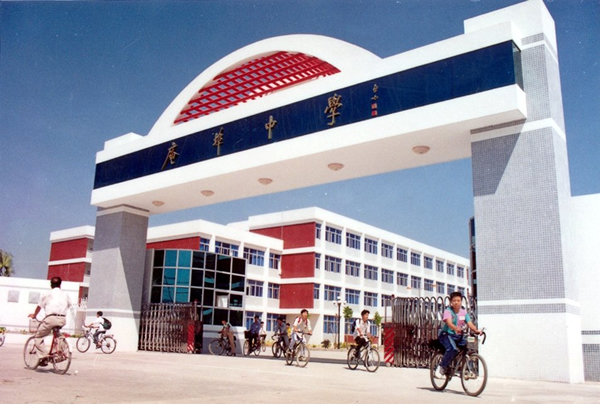
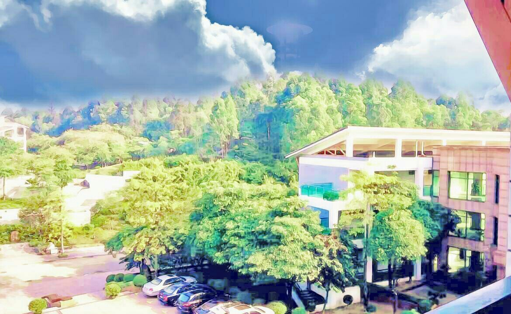

My Hometown
Located in the eastest of Guangdong Province,ChaoZhou is a beautiful city with many places of interest. The people in Chaozhou is warm-hearted and most of them are good at cooking,if you have chance to visit Chaozhou city, Please dont forget to enjoy the Xiangzi Bridge ,which is one of the oldest bridege in China.Tasting the Beef meatball and taking a cup of kongfu tea.
Middle School
Anbu Middle School is my mother school,I met a lots of teachers who influence me deeply.Some of them are kind,some of them are strict,others are funny.Besides,I form the habits of reading and thinking,The playground to the north, the hill to the east, and the existing building to the west are three different surroundings.
College
When I first stepped into the gate of my college,I knew a new life was coming,and that must be the most wonderful days in my life. You may feel that college life is boring. We do not know how to deal with the plenty of spare time. But I think the college life will become wonderful as long as you make it meaningful.
